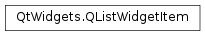

QListWidgetItem¶
Synopsis¶
Functions¶
- def
background() - def
backgroundColor() - def
checkState() - def
flags() - def
font() - def
foreground() - def
icon() - def
isHidden() - def
isSelected() - def
listWidget() - def
setBackground(brush) - def
setCheckState(state) - def
setFlags(flags) - def
setFont(font) - def
setForeground(brush) - def
setHidden(hide) - def
setIcon(icon) - def
setSelected(select) - def
setSizeHint(size) - def
setStatusTip(statusTip) - def
setText(text) - def
setTextAlignment(alignment) - def
setTextColor(color) - def
setToolTip(toolTip) - def
setWhatsThis(whatsThis) - def
sizeHint() - def
statusTip() - def
text() - def
textAlignment() - def
textColor() - def
toolTip() - def
type() - def
whatsThis()
Detailed Description¶
The
PySide2.QtWidgets.QListWidgetItemclass provides an item for use with thePySide2.QtWidgets.QListWidgetitem view class.A
PySide2.QtWidgets.QListWidgetItemrepresents a single item in aPySide2.QtWidgets.QListWidget. Each item can hold several pieces of information, and will display them appropriately.The item view convenience classes use a classic item-based interface rather than a pure model/view approach. For a more flexible list view widget, consider using the
PySide2.QtWidgets.QListViewclass with a standard model.List items can be inserted automatically into a list, when they are constructed, by specifying the list widget:
QListWidgetItem(tr("Hazel"), listWidget)Alternatively, list items can also be created without a parent widget, and later inserted into a list using
QListWidget.insertItem().List items are typically used to display
PySide2.QtWidgets.QListWidgetItem.text()and anPySide2.QtWidgets.QListWidgetItem.icon(). These are set with thePySide2.QtWidgets.QListWidgetItem.setText()andPySide2.QtWidgets.QListWidgetItem.setIcon()functions. The appearance of the text can be customized withPySide2.QtWidgets.QListWidgetItem.setFont(),PySide2.QtWidgets.QListWidgetItem.setForeground(), andPySide2.QtWidgets.QListWidgetItem.setBackground(). Text in list items can be aligned using thePySide2.QtWidgets.QListWidgetItem.setTextAlignment()function. Tooltips, status tips and “What’s This?” help can be added to list items withPySide2.QtWidgets.QListWidgetItem.setToolTip(),PySide2.QtWidgets.QListWidgetItem.setStatusTip(), andPySide2.QtWidgets.QListWidgetItem.setWhatsThis().By default, items are enabled, selectable, checkable, and can be the source of drag and drop operations.
Each item’s flags can be changed by calling
PySide2.QtWidgets.QListWidgetItem.setFlags()with the appropriate value (seeQt.ItemFlags). Checkable items can be checked, unchecked and partially checked with thePySide2.QtWidgets.QListWidgetItem.setCheckState()function. The correspondingPySide2.QtWidgets.QListWidgetItem.checkState()function indicates the item’s current check state.The
PySide2.QtWidgets.QListWidgetItem.isHidden()function can be used to determine whether the item is hidden. To hide an item, usePySide2.QtWidgets.QListWidgetItem.setHidden().
Subclassing¶
When subclassing
PySide2.QtWidgets.QListWidgetItemto provide custom items, it is possible to define new types for them enabling them to be distinguished from standard items. For subclasses that require this feature, ensure that you call the base class constructor with a new type value equal to or greater thanUserType, within your constructor.
-
class
PySide2.QtWidgets.QListWidgetItem([view=nullptr[, type=Type]])¶ -
class
PySide2.QtWidgets.QListWidgetItem(icon, text[, view=nullptr[, type=Type]]) -
class
PySide2.QtWidgets.QListWidgetItem(other) -
class
PySide2.QtWidgets.QListWidgetItem(text[, view=nullptr[, type=Type]]) Parameters: - icon –
PySide2.QtGui.QIcon - type –
PySide2.QtCore.int - other –
PySide2.QtWidgets.QListWidgetItem - view –
PySide2.QtWidgets.QListWidget - text – unicode
Constructs an empty list widget item of the specified
typewith the givenparent. Ifparentis not specified, the item will need to be inserted into a list widget withQListWidget.insertItem().This constructor inserts the item into the model of the parent that is passed to the constructor. If the model is sorted then the behavior of the insert is undetermined since the model will call the
'<'operator method on the item which, at this point, is not yet constructed. To avoid the undetermined behavior, we recommend not to specify the parent and useQListWidget.insertItem()instead.Constructs an empty list widget item of the specified
typewith the givenicon,textandparent. If the parent is not specified, the item will need to be inserted into a list widget withQListWidget.insertItem().This constructor inserts the item into the model of the parent that is passed to the constructor. If the model is sorted then the behavior of the insert is undetermined since the model will call the
'<'operator method on the item which, at this point, is not yet constructed. To avoid the undetermined behavior, we recommend not to specify the parent and useQListWidget.insertItem()instead.Constructs a copy of
other. Note thatPySide2.QtWidgets.QListWidgetItem.type()andPySide2.QtWidgets.QListWidgetItem.listWidget()are not copied.This function is useful when reimplementing
PySide2.QtWidgets.QListWidgetItem.clone().Constructs an empty list widget item of the specified
typewith the giventextandparent. If the parent is not specified, the item will need to be inserted into a list widget withQListWidget.insertItem().This constructor inserts the item into the model of the parent that is passed to the constructor. If the model is sorted then the behavior of the insert is undetermined since the model will call the
'<'operator method on the item which, at this point, is not yet constructed. To avoid the undetermined behavior, we recommend not to specify the parent and useQListWidget.insertItem()instead.- icon –
-
PySide2.QtWidgets.QListWidgetItem.ItemType¶ This enum describes the types that are used to describe list widget items.
Constant Description QListWidgetItem.Type The default type for list widget items. QListWidgetItem.UserType The minimum value for custom types. Values below are reserved by Qt. You can define new user types in
PySide2.QtWidgets.QListWidgetItemsubclasses to ensure that custom items are treated specially.
-
PySide2.QtWidgets.QListWidgetItem.background()¶ Return type: PySide2.QtGui.QBrushReturns the brush used to display the list item’s background.
-
PySide2.QtWidgets.QListWidgetItem.backgroundColor()¶ Return type: PySide2.QtGui.QColorThis function is deprecated. Use
PySide2.QtWidgets.QListWidgetItem.background()instead.
-
PySide2.QtWidgets.QListWidgetItem.checkState()¶ Return type: PySide2.QtCore.Qt.CheckStateReturns the checked state of the list item (see
Qt.CheckState).
-
PySide2.QtWidgets.QListWidgetItem.clone()¶ Return type: PySide2.QtWidgets.QListWidgetItemCreates an exact copy of the item.
-
PySide2.QtWidgets.QListWidgetItem.data(role)¶ Parameters: role – PySide2.QtCore.intReturn type: object Returns the item’s data for a given
role. Reimplement this function if you need extra roles or special behavior for certain roles.See also
Qt.ItemDataRolePySide2.QtWidgets.QListWidgetItem.setData()
-
PySide2.QtWidgets.QListWidgetItem.flags()¶ Return type: PySide2.QtCore.Qt.ItemFlagsReturns the item flags for this item (see
Qt.ItemFlags).
-
PySide2.QtWidgets.QListWidgetItem.font()¶ Return type: PySide2.QtGui.QFontReturns the font used to display this list item’s text.
-
PySide2.QtWidgets.QListWidgetItem.foreground()¶ Return type: PySide2.QtGui.QBrushReturns the brush used to display the list item’s foreground (e.g. text).
-
PySide2.QtWidgets.QListWidgetItem.icon()¶ Return type: PySide2.QtGui.QIconReturns the list item’s icon.
-
PySide2.QtWidgets.QListWidgetItem.isHidden()¶ Return type: PySide2.QtCore.boolReturns
trueif the item is hidden; otherwise returnsfalse.
-
PySide2.QtWidgets.QListWidgetItem.isSelected()¶ Return type: PySide2.QtCore.boolReturns
trueif the item is selected; otherwise returnsfalse.
-
PySide2.QtWidgets.QListWidgetItem.listWidget()¶ Return type: PySide2.QtWidgets.QListWidgetReturns the list widget containing the item.
-
PySide2.QtWidgets.QListWidgetItem.__lt__(other)¶ Parameters: other – PySide2.QtWidgets.QListWidgetItemReturn type: PySide2.QtCore.boolReturns
trueif this item’s text is less thenotheritem’s text; otherwise returnsfalse.
-
PySide2.QtWidgets.QListWidgetItem.read(in)¶ Parameters: in – PySide2.QtCore.QDataStreamReads the item from stream
in.
-
PySide2.QtWidgets.QListWidgetItem.setBackground(brush)¶ Parameters: brush – PySide2.QtGui.QBrushSets the background brush of the list item to the given
brush.
-
PySide2.QtWidgets.QListWidgetItem.setBackgroundColor(color)¶ Parameters: color – PySide2.QtGui.QColorThis function is deprecated. Use
PySide2.QtWidgets.QListWidgetItem.setBackground()instead.
-
PySide2.QtWidgets.QListWidgetItem.setCheckState(state)¶ Parameters: state – PySide2.QtCore.Qt.CheckStateSets the check state of the list item to
state.
-
PySide2.QtWidgets.QListWidgetItem.setData(role, value)¶ Parameters: - role –
PySide2.QtCore.int - value – object
Sets the data for a given
roleto the givenvalue. Reimplement this function if you need extra roles or special behavior for certain roles.Note
The default implementation treats
Qt.EditRoleandQt.DisplayRoleas referring to the same data.See also
Qt.ItemDataRolePySide2.QtWidgets.QListWidgetItem.data()- role –
-
PySide2.QtWidgets.QListWidgetItem.setFlags(flags)¶ Parameters: flags – PySide2.QtCore.Qt.ItemFlagsSets the item flags for the list item to
flags.See also
PySide2.QtWidgets.QListWidgetItem.flags()Qt.ItemFlags
-
PySide2.QtWidgets.QListWidgetItem.setFont(font)¶ Parameters: font – PySide2.QtGui.QFontSets the font used when painting the item to the given
font.
-
PySide2.QtWidgets.QListWidgetItem.setForeground(brush)¶ Parameters: brush – PySide2.QtGui.QBrushSets the foreground brush of the list item to the given
brush.
-
PySide2.QtWidgets.QListWidgetItem.setHidden(hide)¶ Parameters: hide – PySide2.QtCore.boolHides the item if
hideis true; otherwise shows the item.
-
PySide2.QtWidgets.QListWidgetItem.setIcon(icon)¶ Parameters: icon – PySide2.QtGui.QIconSets the icon for the list item to the given
icon.
-
PySide2.QtWidgets.QListWidgetItem.setSelected(select)¶ Parameters: select – PySide2.QtCore.boolSets the selected state of the item to
select.
-
PySide2.QtWidgets.QListWidgetItem.setSizeHint(size)¶ Parameters: size – PySide2.QtCore.QSizeSets the size hint for the list item to be
size. If no size hint is set, the item delegate will compute the size hint based on the item data.
-
PySide2.QtWidgets.QListWidgetItem.setStatusTip(statusTip)¶ Parameters: statusTip – unicode Sets the status tip for the list item to the text specified by
statusTip.PySide2.QtWidgets.QListWidgetmouseTracking needs to be enabled for this feature to work.
-
PySide2.QtWidgets.QListWidgetItem.setText(text)¶ Parameters: text – unicode Sets the text for the list widget item’s to the given
text.
-
PySide2.QtWidgets.QListWidgetItem.setTextAlignment(alignment)¶ Parameters: alignment – PySide2.QtCore.intSets the list item’s text alignment to
alignment.See also
PySide2.QtWidgets.QListWidgetItem.textAlignment()Qt.AlignmentFlag
-
PySide2.QtWidgets.QListWidgetItem.setTextColor(color)¶ Parameters: color – PySide2.QtGui.QColorThis function is deprecated. Use
PySide2.QtWidgets.QListWidgetItem.setForeground()instead.
-
PySide2.QtWidgets.QListWidgetItem.setToolTip(toolTip)¶ Parameters: toolTip – unicode Sets the tooltip for the list item to the text specified by
toolTip.
-
PySide2.QtWidgets.QListWidgetItem.setWhatsThis(whatsThis)¶ Parameters: whatsThis – unicode Sets the “What’s This?” help for the list item to the text specified by
whatsThis.
-
PySide2.QtWidgets.QListWidgetItem.sizeHint()¶ Return type: PySide2.QtCore.QSizeReturns the size hint set for the list item.
-
PySide2.QtWidgets.QListWidgetItem.statusTip()¶ Return type: unicode Returns the list item’s status tip.
-
PySide2.QtWidgets.QListWidgetItem.text()¶ Return type: unicode Returns the list item’s text.
-
PySide2.QtWidgets.QListWidgetItem.textAlignment()¶ Return type: PySide2.QtCore.intReturns the text alignment for the list item.
See also
PySide2.QtWidgets.QListWidgetItem.setTextAlignment()Qt.AlignmentFlag
-
PySide2.QtWidgets.QListWidgetItem.textColor()¶ Return type: PySide2.QtGui.QColorReturns the color used to display the list item’s text.
This function is deprecated. Use
PySide2.QtWidgets.QListWidgetItem.foreground()instead.
-
PySide2.QtWidgets.QListWidgetItem.toolTip()¶ Return type: unicode Returns the list item’s tooltip.
-
PySide2.QtWidgets.QListWidgetItem.type()¶ Return type: PySide2.QtCore.intReturns the type passed to the
PySide2.QtWidgets.QListWidgetItemconstructor.
-
PySide2.QtWidgets.QListWidgetItem.whatsThis()¶ Return type: unicode Returns the list item’s “What’s This?” help text.
-
PySide2.QtWidgets.QListWidgetItem.write(out)¶ Parameters: out – PySide2.QtCore.QDataStreamWrites the item to stream
out.
© 2018 The Qt Company Ltd. Documentation contributions included herein are the copyrights of their respective owners. The documentation provided herein is licensed under the terms of the GNU Free Documentation License version 1.3 as published by the Free Software Foundation. Qt and respective logos are trademarks of The Qt Company Ltd. in Finland and/or other countries worldwide. All other trademarks are property of their respective owners.